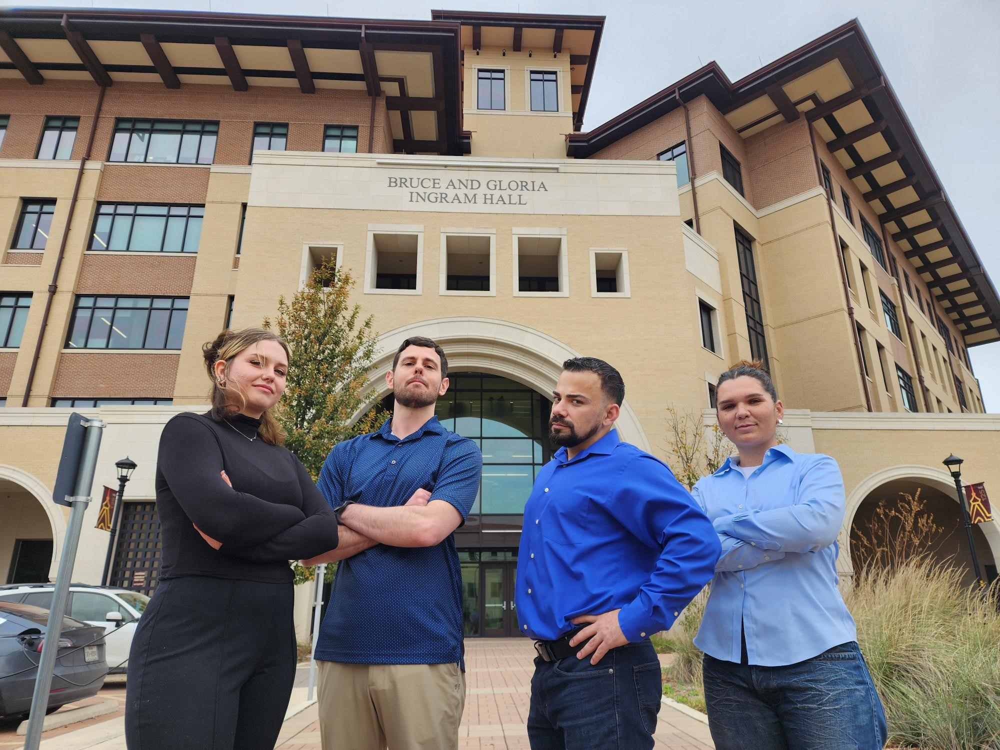
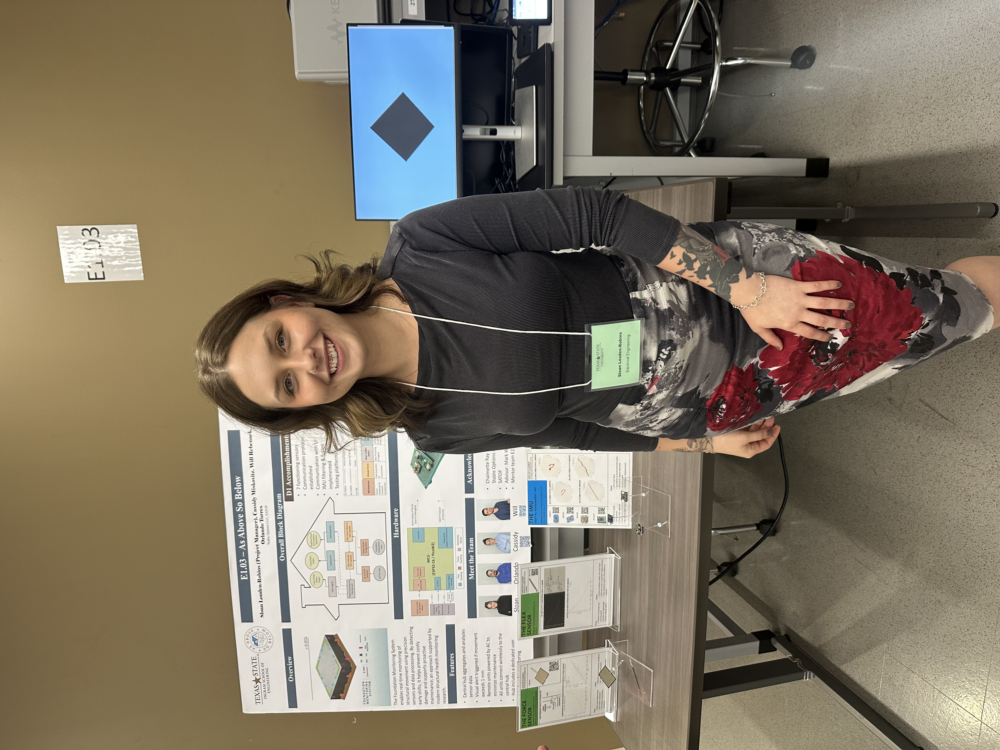
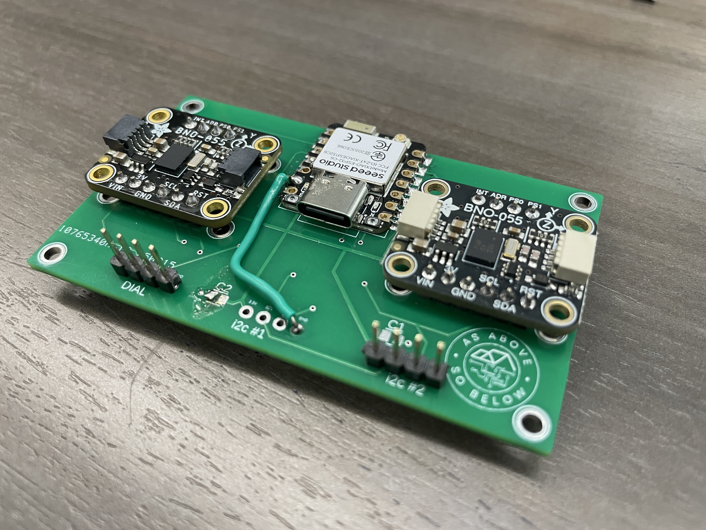
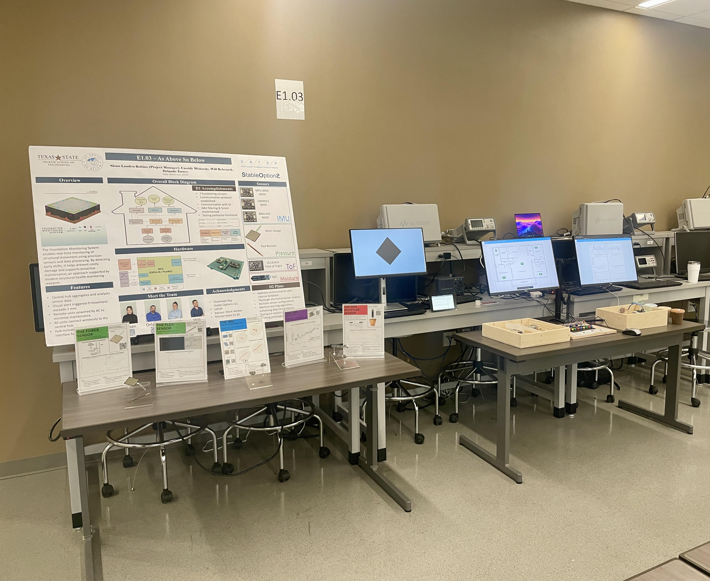

Sloan Louden-RobinsEE + Applied Math • Embedded • Sensors • Signal Processing
Foundation Monitoring System
A multi-sensor structural monitoring prototype designed to detect millimeter-scale
foundation movement using embedded sensing, wireless data acquisition,
and real-time analytics.
Project Overview
The Foundation Monitoring System was a senior design research project focused on developing
a prototype platform capable of detecting small structural shifts in residential foundations.
The system combines multiple sensing modalities — including inertial measurement units (IMUs),
time-of-flight distance sensors, radar, and environmental sensors — with embedded hardware,
wireless communication, and real-time visualization tools.
Our objective was to explore which sensing approaches could reliably detect
millimeter-scale motion over long durations while remaining cost-effective
for residential monitoring. The project resulted in a modular sensor node
architecture, wireless data pipeline, and prototype user interface capable
of monitoring structural behavior continuously.
The Foundation Monitoring System was developed as part of a senior engineering
design project focused on detecting early signs of residential foundation
movement. The project explored multiple sensing approaches capable of detecting
millimeter-scale displacement while remaining practical for long-term
monitoring in real homes.
Our team designed and tested a modular sensing platform that integrates
embedded sensor nodes, wireless communication, and a centralized monitoring
interface. The system evaluates several sensing modalities — including
inertial sensors, distance sensors, and environmental measurements — in
order to determine which techniques are most reliable for long-term
structural monitoring.
Collaboration

Figure 1. Senior design team presenting the Foundation Monitoring System
(from left to right) Sloan Louden-Robins (PM) Will Rebenack, Orlando Torres, Cassidy Miskovitz.
Worked in a four-person multidisciplinary engineering team.
Collaborated across hardware, embedded systems, and data analysis
to design and validate a complete sensing pipeline.
Presented system architecture, sensor testing results, and prototype
demonstrations during Engineering Design Day.
My Role

Figure 2. Presenting the system architecture and sensor results
during Engineering Design Day Semester 1.
Served as Project Manager, coordinating project planning,
subsystem integration, and technical documentation.
Contributed to hardware prototyping and sensor evaluation,
including IMU-based displacement measurements and embedded data
acquisition.
Helped design the system architecture linking embedded sensor
nodes, wireless communication, and centralized monitoring tools.
System Architecture & Data Pipeline
I designed the system as a modular, end-to-end monitoring pipeline:
distributed sensor nodes collect motion/environment data, transmit
telemetry wirelessly, and a Raspberry Pi gateway aggregates streams
for logging, visualization, and alerting. This architecture let us
swap sensing modalities (IMU, ToF, radar, moisture/pressure) while
keeping the same acquisition and analytics framework.
Figure. Simplified system architecture showing distributed sensor nodes,
wireless telemetry, central gateway aggregation, and monitoring interface.
End-to-End Flow
Sense: Node reads sensors and timestamps measurements.
Transmit: Node publishes telemetry over Wi-Fi.
Aggregate: Raspberry Pi gateway subscribes, validates, and logs data.
Visualize: Dashboard displays live status + trends; alerts trigger on thresholds.
Hardware + Network Topology
Sensor nodes: MCU-based modules (e.g., ESP32-class) connected to one or more sensors (IMU / ToF / radar / environmental).
Central gateway: Raspberry Pi running the broker, logger, and UI (single source of truth for system health and data capture).
Modular design: Add/remove nodes without changing the core pipeline (enables rapid trade studies across sensors).
Messaging + Monitoring
Discovery: Lightweight node discovery + handshake to simplify setup and field deployment.
Telemetry format: Structured messages (e.g., JSON) with consistent fields for parsing and analysis.
Topics by sensor: Clear topic naming (per node / per sensor) to keep multi-sensor streams organized.
System Performance (Representative)
Update rate: ~20–100 Hz depending on sensor + mode
Typical end-to-end latency: ~5–15 ms for acquisition loop
Comms reliability: 99%+ packet delivery observed in testing
Hardware Development & Sensor Integration
A major component of the project involved developing and testing embedded
hardware capable of supporting multiple sensing modalities. The system was
designed around modular sensor nodes so that different sensing approaches
could be evaluated under the same data acquisition and networking pipeline.
Hardware Design Goals
Support multiple sensing modalities (IMU, ToF, radar, environmental sensors).
Maintain modular architecture so sensors could be swapped during testing.
Enable continuous monitoring with reliable wireless data transmission.
Custom Sensor Node Hardware

Figure 3. Prototype PCB integrating inertial sensors with an embedded
microcontroller for displacement monitoring experiments.
Developed custom sensor node hardware integrating IMU sensors and embedded processing.
Evaluated orientation-based displacement detection using inertial measurements.
Designed the hardware to support iterative testing and rapid sensor replacement.
Prototype Test Platform
Cassidy built prototype hardware assemblies to test sensor stability and repeatability.
Conducted controlled experiments to measure sensor drift and noise characteristics.
Used the platform to compare sensing techniques for detecting millimeter-scale motion.
Sensor Evaluation & Experimental Testing
Sensor Technologies Investigated
Inertial Measurement Units (IMUs): evaluated for detecting small angular shifts that could indicate foundation tilt.
Time-of-Flight (ToF) distance sensors: tested for direct measurement of displacement between structural reference points.
Radar sensing modules: investigated as a non-contact approach for detecting subtle structural movement.
Experimental Test Methodology
Built controlled experimental setups to measure sensor precision and stability.
Collected long-duration datasets to evaluate drift, noise, and repeatability.
Compared sensing approaches based on accuracy, reliability, and integration complexity.

Figure 4. Integrated system demonstration showing the monitoring platform
used to evaluate sensor performance and validate system behavior at design day semester 1.
Data Processing & Monitoring
To support continuous monitoring, the project included a complete data
processing pipeline that streamed sensor measurements from distributed
nodes to a central gateway for aggregation and visualization. This
architecture enabled real-time monitoring of structural behavior while
also storing historical data for analysis and testing.
Data Acquisition Pipeline
Sensor nodes collected measurements and packaged readings into structured telemetry messages.
Wireless communication transmitted sensor data to a central gateway for aggregation.
Data streams were logged to enable long-duration monitoring and post-processing analysis.
Real-Time Monitoring Interface
A centralized dashboard displayed live sensor values and system status.
The monitoring interface allowed rapid validation of sensor behavior during experiments.
Real-time visualization helped identify drift, noise patterns, and system anomalies.
Results & Key Findings
Performance Summary
Distance sensing precision: Time-of-Flight testing achieved
approximately 0.6 mm standard deviation during controlled experiments.
Communication latency: End-to-end telemetry latency averaged
~33 ms with reliable packet delivery during system testing.
System integration: The prototype successfully demonstrated
continuous monitoring using distributed sensor nodes, wireless data
transmission, and centralized visualization.